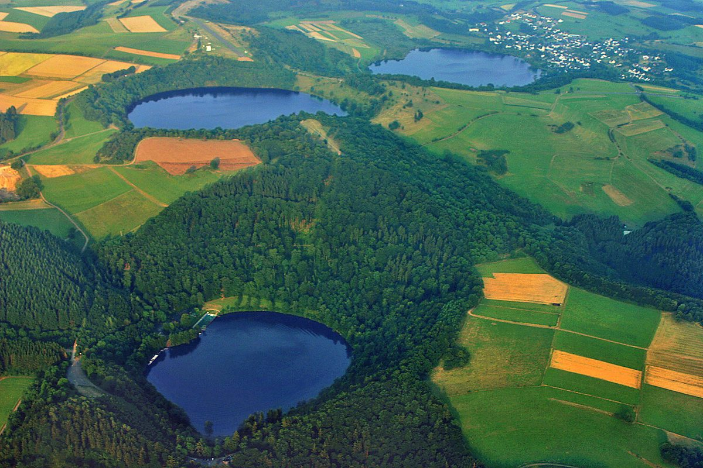

Exploring the Eifel Maare: Germany's Volcanic Lakes

The Eifel Maare are one of Germany's most unique natural wonders. These circular lakes, formed by ancient volcanic explosions, dot the picturesque Eifel region with their deep blue waters and lush surroundings. Perfect for nature lovers, hikers, and those seeking tranquility, the Maare offer breathtaking landscapes year-round.
Getting There
The Eifel region is easily accessible by car from major cities like Cologne, Bonn, and Frankfurt. Public transport options include trains to nearby towns like Daun or Manderscheid, followed by local buses or taxis. Having a car gives you more flexibility to explore multiple Maare in one trip.
Best Time to Visit
Spring through early autumn (May to September) offers the most pleasant weather for hiking and outdoor activities. Summer brings warm temperatures perfect for swimming in permitted lakes, while autumn paints the surrounding forests in vibrant colors. Winter visits can be magical but some trails may be icy.
Top Highlights
1. Pulvermaar - The deepest and clearest of the Maare, ideal for swimming in summer with a small beach area.
2. Gemündener Maar - Surrounded by dense forest, this maar features a beautiful circular hiking trail with panoramic views.
3. Meerfelder Maar - The largest maar, partially drained for agriculture, offering unique photo opportunities.
4. Windsborn Crater Lake - The only maar north of the Alps that's completely filled with water.
5. Dauner Maare Trio - Three maares close together (Schalkenmehrener, Weinfelder, and Gemündener) perfect for a combined hiking day.
Local Cuisine
The Eifel region offers hearty German fare with local specialties. Try the famous 'Eifeler Döppekooche' (potato cake), game dishes from the surrounding forests, and locally brewed beers. Many maares have lakeside cafes serving traditional cakes and coffee - perfect after a hike.
Tips for Visitors
Wear sturdy shoes as some trails can be uneven. Bring swimwear if visiting in summer (check which maares allow swimming). Consider combining your visit with nearby attractions like Burg Eltz castle or the Nürburgring racetrack. Most maares have free entry, though parking may require a small fee.
Haiktec
- 7 Simple Steps to Slash Your Grocery Budget Without Sacrificing Quality
- Ultimate Exam Prep Budget & Progress Tracker for Students
- The Little Restaurant Success Kit: Simple Strategies to Attract Families & Boost Your Sales
Text mit KI erstellt und automatisch geprueft.